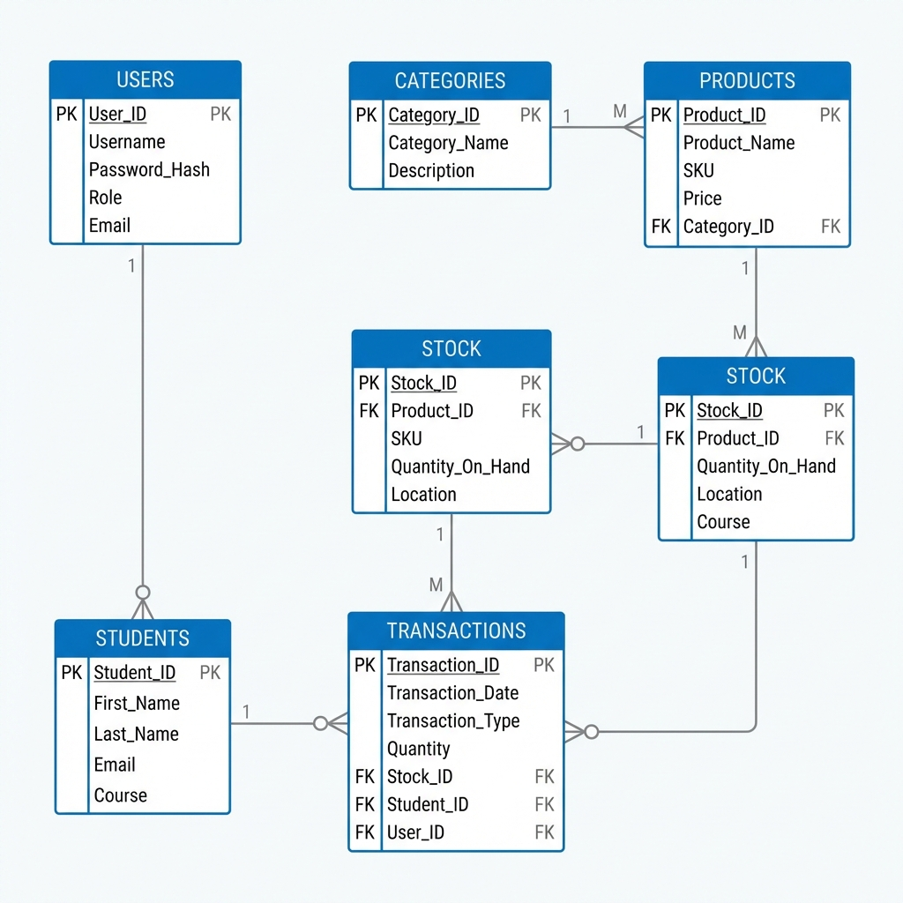

Entity Relationship Diagram (ERD)

Database Schema Overview
The database consists of three main entities designed to track users, stock, and distribution
history.
1. Users Table
- Purpose: Manages authentication and access control.
- Attributes:
id (PK), username,
password (Hashed), role (Admin/User).
- Key Feature: Stores secure, hashed passwords for security.
2. Inventory Table
- Purpose: Stores the current stock levels of all items.
- Attributes:
id (PK), name,
category (Uniform, Kit), size (S/M/L), quantity,
price.
- Key Feature: Categorizes items and tracks size logic (required for
uniforms).
Relationships & Transaction Logic
3. Transactions Table
- Purpose: Logs every distribution event to a student.
- Attributes:
id (PK), student_name,
student_class, item_id (FK), quantity,
date.
- Relationship: Linked to
Inventory via
item_id.
Relationships
- One-to-Many: One Inventory Item (
Inventory.id) can have
multiple Transaction records (Transactions.item_id).
- This allows the system to calculate stock deductions dynamically and keep a permanent
history of who received what.
Programming Languages & Database
Core Languages
- JavaScript (ES6+): Used for both Frontend and Backend (Full Stack).
- SQL: Used for database queries and management.
- HTML5 / CSS3: For structure and styling.
Database: SQLite
- Why Chosen?
- Serverless: No separate server process; runs from
inventory.db.
- Zero Configuration: Easy to set up and move (portable).
- Reliability: ACID compliant and standard SQL support.
- Efficiency: Perfect for local apps where huge DB servers are
overkill.
Frameworks & Tools
1. Frontend: React + Vite
- React: Component-based architecture (modular and reusable).
- Vite: Modern build tool, instant server start, fast HMR.
- Axios: For making HTTP requests to the backend.
2. Backend: Node.js + Express
- Node.js: Runtime environment to execute JavaScript on the server.
- Express: Minimalist web framework to handle API routes (GET, POST).
- SQLite3: Driver to interact with the database file.
Project Objectives
- Digitize Inventory: Move away from paper-based tracking to a digital
system.
- Automate Distribution: Streamline the process of handing out kits and
uniforms.
- Real-Time Tracking: Automatically update stock levels instantly when
distributed.
- Record Keeping: Maintain a searchable history of who received what and
when.
- Prevent Errors: Reduce human error in stock counting and student data
entry.
Problem Statement
- Manual Inefficiency: Previous paper records were slow to update and hard to
search.
- Stock Discrepancies: Physical stock didn't match records due to unlogged
items.
- Lack of History: Difficult to verify past distributions (e.g., "Did Student
A already get a kit?").
- Reporting: Generating reports on total distributions or remaining stock was
manual.
System Flow Diagram
Start
Login Page
Valid Credentials?
No
Yes
Dashboard
Select Action
Distribute Item
Enter Student
Details
Update Database
Add Stock
Fill Inventory
Form
Update Database
End
Credentials Valid?
Select Operation:
Tools & Environment
- VS Code: Primary Code Editor.
- Postman: For testing API endpoints (Backend testing).
- Git & GitHub: Version control and code repository.
- Node Package Manager (NPM): Dependency management.
- Browser DevTools: For debugging the Frontend UI.
- Command Line / Terminal: For running the servers.
How to Run the Project
Step 1: Backend Setup
- Open Terminal.
cd servernpm installnode server.js (Runs on Port 3000)
Step 2: Frontend Setup
- Open New Terminal.
cd client_v2npm installnpm run dev (Runs on Port 5173)
Step 3: Access